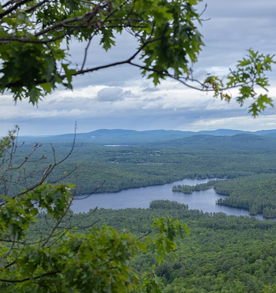
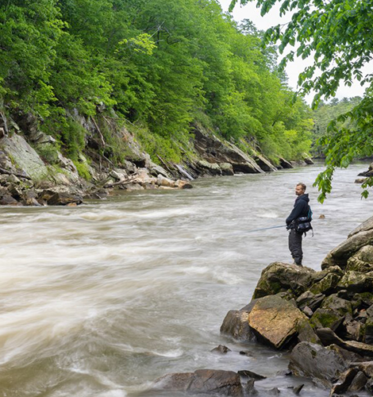
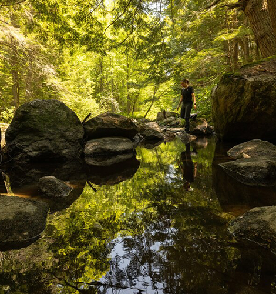
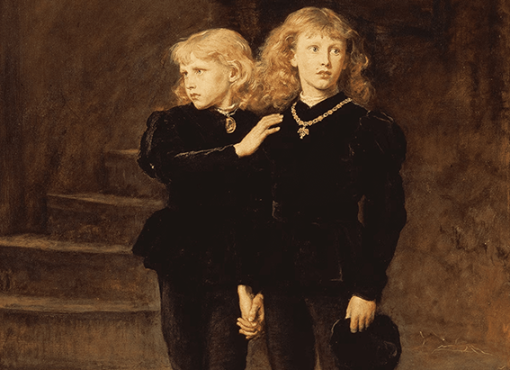
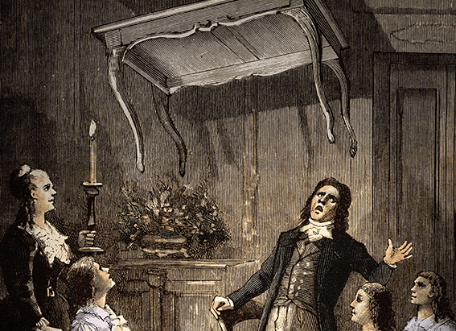

NATIONAL GEOGRAPHIC
Maine's mountains and lakes offer space to pause and wonder
TRAVEL
- 
- 
- 
Pine-scented air, refreshing hikes
Johnson recently returned to Maine for a trip that included hikes up Pleasant Mountain a two-hour drive from Rockport and Bradbury Mountain to the south. The state is a hiker's paradise: The famed Appalachian Trail's northernmost end lies at Katahdin, Maine's highest peak, which rises to 5,269 feet.
Maine's mountains also draw skiers, wildlife watchers, and those who want to be out on the bodies of water such as the Rangeley Lakes for fishing, swimming, kayaking, and other water sports. Fittingly, the state's "flower" is actually the cone and tassel of the white pine, a tree that can live for over 400 years and grow more than 200 feet high.
At Bradbury Mountain State Park, a short but sweet .3-mile trail takes hikers right to the top, past stark cliff faces punctuated with ferns and mosses. The park's 800 acres also encompass shared trails for horseback riding, mountain biking, and snowmobiling.
"I was impressed by how good the view was for such a short, easy walk. From the top of Bradbury Mountain, you can see far, "Johnson says. "There is definitely rewarding terrain for all abilities to be found in Maine."
Stunning vistas at Pleasant Mountain`
Another way to access Maine's mountain views is to go for a drive. Maine has several scenic byways, including the High Peaks Scenic State Byway in the central part of the state. The High Peaks route winds along the Carrabassett River northward from the historic mill town of Kingfield in the central part of the state; Sugarloaf Mountain is along the way, about 20 minutes from Kingfield. Another central option, Grafton Notch, begins just north of the Sunday River Ski Area and follows along Bear River—it's an excellent route for leaf peeping in the fall.
Later in her trip, Johnson hiked Pleasant Mountain, which at 2,006 feet is the tallest mountain in southern Maine. The mountain is home to an eponymous ski area and is near Sebago Lake, a 45-square-mile oasis surrounded by beaches, campsites, picnic areas, and boat launches.
The more than 10 miles of trails at Pleasant Mountain are rated moderate to advanced, which suited Johnson. "I like a bit of a challenge, so I enjoyed hiking up Pleasant Mountain and having to work a little bit to get to the top," she says. "From there I could see all the way to the White Mountains panoramic views in every direction and out over all of the lakes. It was beautiful."
She set out for the summit later in the day to capture the sunset views, with the sounds of birdsong and chirping crickets accompanying her. Growing up in Alaska, the "storybook" sound of crickets wasn't something she was used to: "It was a sound that you would hear in movies, but never in real life," she said. "To feel that buzzing sense of aliveness in the forest has always been special to me."
Johnson appreciated connecting with helpful guides and locals in towns such as Rockport and Kennebunkport, but she also treasured the opportunities for space and solitude on the trip.
"At the top, it was windy and austere and quiet," she says. "I was the only person on the mountain, and it felt wild."
Comments :
- john Very good
- john Very good
Leave a Reply
Your email address will not be published. Required fields are marked*
Related posts:
-
Exclusive This is how you solve one of history's greatest cold cases
In the summer of 1483, Edward V and his younger brother Richard entered the Tower of London and were never seen again. Their disappearance has long been laid at the feet of their uncle, Richard III, who has been accused
View article -
What were Marcus Aurelius' rules for life His self-help classic has the answers
The second-century A.D. world of Emperor Marcus Aurelius was in shambles. A great plague ravaged western Europe, as he embarked on a long and bloody war against the Germanic tribes along the Danube frontier.
View article -
‘I hear dead people’ How the world went wild for talking to spirits 100 years ago
The desire to communicate with the dead is probably as old as human history. Ghosts played major roles in ancient cosmologies from Mesopotamia to Greece to China, but seeking out the counsel of the departed was outlawed
View article